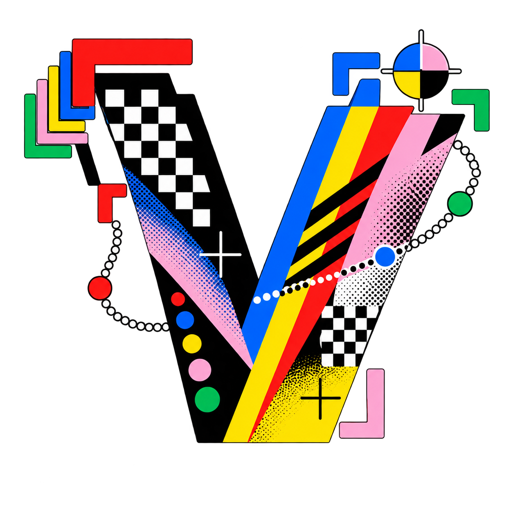

01 / Detect
Frame the subject
Open corners, registration marks and confident geometry make detection visible without looking surveillance-heavy.
Identity system
CHROMA PRESS — A visual operating system for expressive computer-vision overlays.

01 / Idea
visionstyle gives object detection a point of view. Its identity should make data feel authored—not merely displayed.
01 / Detect
Open corners, registration marks and confident geometry make detection visible without looking surveillance-heavy.
02 / Style
Color rails, grain, confidence dots and tracking paths signal that visionstyle is an expressive toolkit.
03 / Track
A dotted route gives the system a sense of time, direction and kinetic intelligence.
04 / Publish
The identity scales down to one mark and up to a rich, editorial visual field.
Signature thought
Data can be accurate
and beautiful.
The Chroma Press direction uses bold print color with detection grammar. It is playful without being childish, technical without becoming cold.
02 / Mark



Preferred
Use the full lockup whenever “visionstyle” has to be read for the first time.
Compact
Use the V symbol in a square or when the name is already visible nearby.
Never separate
Do not rebuild the colored wordmark in a system typeface. Use the supplied lockups.
03 / Space
Clear space = the height of the red triangle inside the wordmark’s “v”.
Keep this amount of empty space on all sides of the lockup. For the standalone V, use one quarter of the symbol’s overall width. More breathing room is always welcome.
| Asset | Digital minimum | Print minimum |
|---|---|---|
| Full lockup | 220 px wide | 35 mm wide |
| V symbol | 32 px square | 8 mm square |
| Watermark | 56 px square | 12 mm square |
| Favicon | 16 px square | Digital only |
04 / Voice
Editorial display / Georgia
Use for guide titles, campaign statements and feature-page headlines. Never use in product controls.
Technical voice / JetBrains Mono
Use for labels, metadata, code, captioning and visual-system signals. Product UI may use the bundled VS Sans for body text.
05 / Context
Let the app use the full lockup in its entry moments, then return to the symbol in persistent navigation.
Signature colors, live tracking and punchy editorial energy.

06 / Ship

16 PX
32 PX
48 PX
180 PX
Current source assets
For final production, retain these raster references and commission a vector master (SVG / PDF) for print, high-resolution exports and deterministic favicon generation.